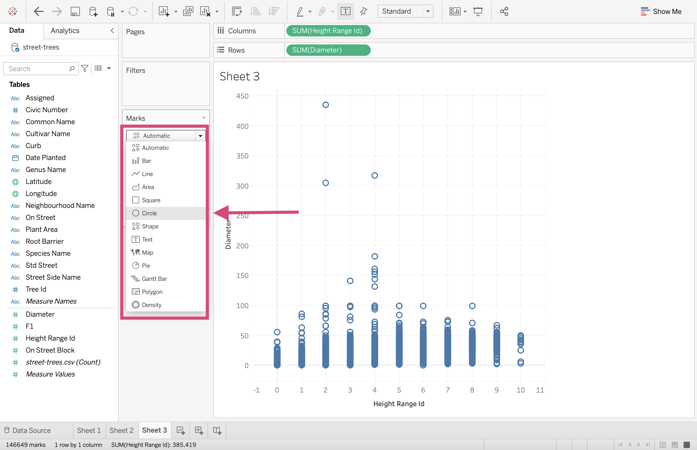
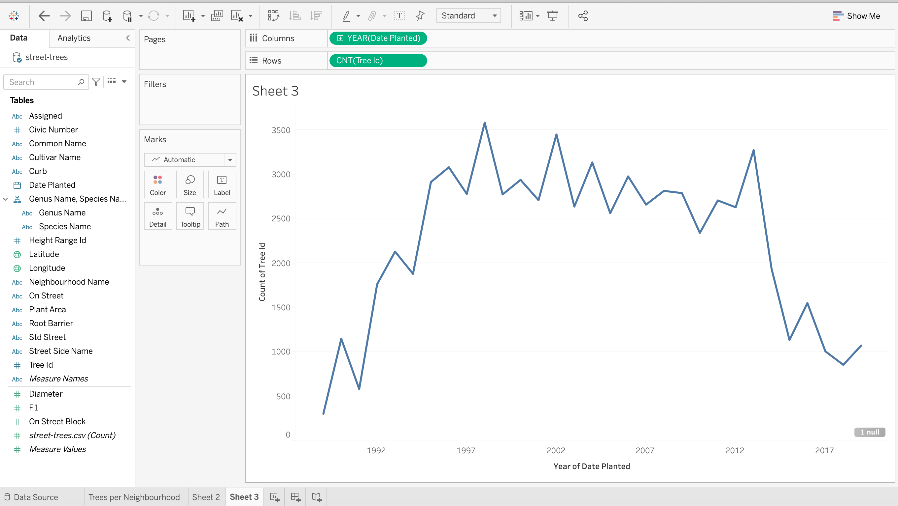

2. Plot types and the Dashboard¶
2.1. More Plotting Examples¶
Alright, let’s now take a shot at creating some of the plots we just learned about.
2.1.1. Pie Chart¶
Let’s say we want to see the proportion of trees planted with root barriers to trees planted without root barriers.
First, make a new worksheet.
Step by Step Instructions
1. Drag the Root Barrier field to the Color mark icon.

2. Drag the Tree Id field to the Area mark icon.

3. Convert the Tree Id field to a Count Measure by right-clicking it and selecting from the dropdown menu.
{kind=link}
4. Click on the Show Me menu on the top right side of the workspace.

5. Select the pie chart icon.

And voila! We baked made a pie chart ü•ß!
{kind=link}
2.1.2. Stacked Bars¶
A pie chart may not be the best visualization to see the proportion of trees planted with root barriers to trees planted without root barriers.
Let’s see how it looks like as a stacked Bar chart.
Make a new worksheet or clear the current sheet you are on.
Step by Step Instructions
1. Drag the Tree Id field to the Rows shelf.

2.Convert this field to a Count Measure by right-clicking and selecting the appropriate measure.

3. We can now add the stacking part of this bar chart by dragging Root Barrier to the Color icon in the Marks card.

4. Let’s transpose this graph so it’s a little clearer by clicking the Swap Rows and Columns icon in the toolbar.
{kind=link}
Great! Here is our stacked bar chart!

2.1.3. Side-by-Side Bars¶
Still maybe not the right plot for this question. Let’s go with a barplot with the categories side-by-side.
Step by Step Instructions
1. Drag the Root Barrier field to the Columns shelf.
{kind=link}
2. Drag the Tree Id field to the Rows shelf again.
{kind=link}
You may have to indicate that want to Add All Members

3. Convert the Tree Id field to a Count Measure by right-clicking and selecting the appropriate measure.
{kind=link}
4. Let’s add a little bit of colour to this plot. This isn’t a necessary step, however, we are doing this for consistency to compare to the last three charts.
{kind=link}
Now that we’ve done that, which plot out of the pie, stacked bars and side-by-side plot do you most prefer?
{kind=link}
2.1.4. Scatter Plot¶
With this particular data source, we don’t really have 2 good continuous numeric columns. To demonstrate how to make a scatter plot, we are going to use what we have and make the best of it.
Let’s plot and see if there is a relationship between the diameter of the trees’ trunks and their height.
Step by Step Instructions
1. First, let’s convert the Height Range Id column to a Measure. We can do this by right-clicking on it and selecting Measure.

2. Drag the newly transformed Height Range Id measure to the Columns shelf. Note that this is going to change it to a SUM aggregate. This is ok because we will be summing over values of Tree ID and thankfully this is a unique column!

3. Next drag the Diameter Measure to the Rows shelf. This will again transform into an aggregate SUM.
{kind=link}
This only gives us a single point. We need to split it up so we have a point for each tree.
4. Dragging Tree Id to the Details icon in Marks Card will cause another popup window where we can “Add all members”.

5. We then can change the mark type to a Circle…
{kind=link}
6. …And decrease the point size.

Great!
{kind=link}
2.1.5. Line Graph¶
We are now interested in answering the question How many trees were planted over the years?
Before you start, let’s make a new worksheet.
Step by Step Instructions
1. Drag the Date Planted field to the Columns shelve and the tree Id field to the Rows shelf.
{kind=link}
2.\ We are again interested in the number of trees planted at selected dates so once again, we want to transform this field to a Count Measure.
{kind=link}
3. Since Date Planted is a continuous variable, it’s a good idea to right-click and transform this field into a Continuous Dimension.
{kind=link}
4. This automatically generates the number of trees planted each year (but there are null values!)
{kind=link}
4. We can change the YEAR(Date Planted) field to:
MONTH(Date Panted)(top month choice when right-clicking) - which aggregates months together for all years.


MONTH(Date Panted)(Bottom month choice when right-clicking) - which will make a sequential plot.
{kind=link}
{kind=link}
We are going to stick with the year dimension though!
{kind=link}

{kind=link}
5. We can add a circle for clarity at each year as part of our line graph by dragging a second Tree Id field to the Rows shelf.

Warning
You may get a popup warning when you do this where I specify Add All Members since we are converting it to a COUNT measure after this.

6. We need to make sure we also convert it to a Count measure.
{kind=link}
At first, we should get 2 graphs on top of each other.

7. We can right-click one of them and select “Dual Axis”.

This will superimpose one on another with a left and a right axis title.
{kind=link}
8. We can hide the one on the right by right-clicking the axis and unticking the “Show Header” option.

{kind=link}
9. In the Marks card, select the `CNT(Tree Id)(2), and from the dropdown, select circle.

Now we have a line plot with points!

10. To change the colour of the line and the points, we need to make sure we change the colour of both measures by selecting the “All” tab under the “Marks” card on the right.

11. Don’t forget to give it a title and edit the y-axis label as we did before!.

2.1.6. Histograms¶
2.1.7. Boxplot¶
2.1.8. Heatmap¶
2.2. Quick Quiz¶
True or False: Using the same data, a histogram’s shape can change depending on the bin size.
True or False: When we are visualizing data from a single column, we are (usually) more interested in the shape/distribution in general, than individual points.
What does the middle line of a box plot represent?
Which visualization type can show multiple summary statistics of data as well as their distributions?
What is another name for a density plot?
What plot type is most appropriate if we are interested in visualizing the relationship between two numeric/quantitative columns?
2.4. Publishing data sources¶
2.5. Quick Quiz¶
True or False: Using the same data, a histogram’s shape can change depending on the bin size.
True or False: When we are visualizing data from a single column, we are (usually) more interested in the shape/distribution in general, than individual points.
What does the middle line of a box plot represent?
Which visualization type can show multiple summary statistics of data as well as their distributions?
What is another name for a density plot?
What plot type is most appropriate if we are interested in visualizing the relationship between two numeric/quantitative columns?